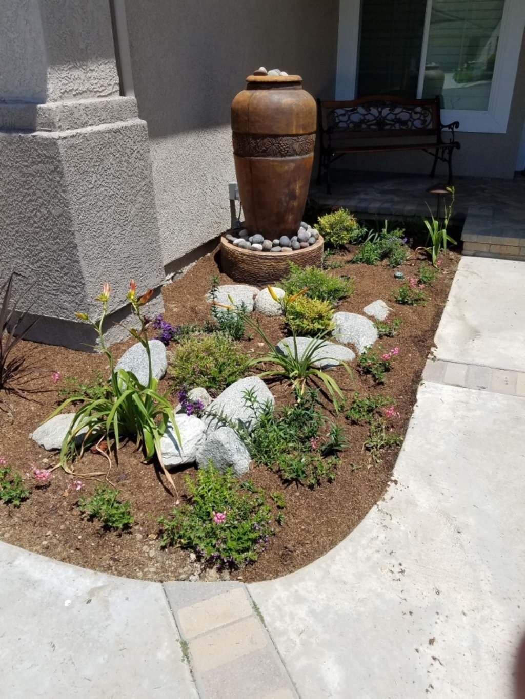

Water Conservation in Modern Landscaping
Discover how innovative landscaping techniques can help conserve water while maintaining a stunning outdoor space.
Why Water Conservation Matters
Water is a precious resource, and modern landscaping techniques aim to use it wisely. By integrating sustainable practices into your garden design, you not only reduce your environmental impact but also save on water bills and create a resilient, thriving landscape.
Top Techniques for Water Conservation
1. Smart Irrigation Systems
Smart irrigation controllers adjust watering schedules based on weather and soil moisture, ensuring plants receive the right amount of water without waste.
2. Drought-Resistant Plants
Choose native or drought-tolerant plants that thrive in local conditions with minimal water, reducing maintenance and conserving resources.
3. Mulching
Apply organic mulch around plants to retain soil moisture, suppress weeds, and improve soil health.
4. Permeable Hardscapes
Use permeable materials for patios and walkways to allow rainwater to infiltrate the ground instead of running off into storm drains.
Transform Your Landscape Today
Ready to create a sustainable, water-efficient landscape? Contact us to schedule a consultation and start your journey toward a greener future.
Get Started